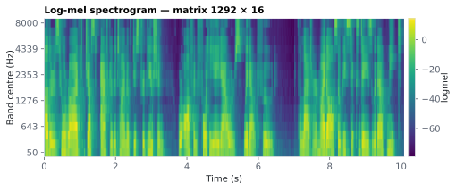
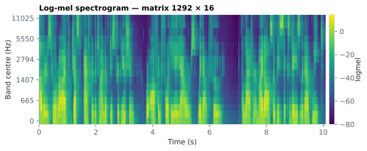

On this page
6.5.3Log-mel spectrogram
The log-mel spectrogram is a time × frequency picture of the audio in which the frequency axis is warped to the perceptual mel scale (fine resolution at low frequencies, coarse at high) and the magnitude is in decibels.
6.5.3.1What it is
The log-mel spectrogram is a time × frequency picture of the audio in which the frequency axis is warped to the perceptual mel scale (fine resolution at low frequencies, coarse at high) and the magnitude is in decibels. Where the amplitude envelope collapses all frequencies into one loudness contour, the log-mel keeps the spectral detail — which frequency bands carry energy at each instant — while staying on the slow analysis grid. It is the standard spectrotemporal stimulus representation for auditory neuroscience.
Emitted as a 2-D array logmel of shape (N, n_mels) in
acoustic/<stim>_acoustic.mat, plus a 1-D mel_center_freqs (length
n_mels) giving the center frequency in Hz of each band. Rows share the
grid (t, fs) with the other acoustic features.
6.5.3.2See it


6.5.3.3In your output
| variable | size | MATLAB class |
|---|---|---|
logmel | 1292 × 16 | double |
mel_center_freqs | 1 × 16 | double |
t | 1292 × 1 | double |
fs | 1 × 1 | double |
6.5.3.4MATLAB
S = load('acoustic/LJ002-0321_acoustic.mat');
whos('-file', 'acoustic/LJ002-0321_acoustic.mat') % variables, sizes, classes
imagesc(S.t, 1:size(S.logmel, 2), S.logmel'); axis xy
xlabel('Time (s)'); ylabel('mel band'); colorbar
% band centre frequencies (Hz): S.mel_center_freqs
6.5.3.5How it's computed
Source sensi/extractors/acoustic_ts.py → log_mel_spectrogram(...), built on
librosa:
- STFT with a ~25 ms analysis window (
win = max(hop, round(0.025·sr))) andn_fft= next power of two ≥win. The hop length is set so the frame rate equalsanalysis_rate(hop = round(sr/rate)), which is what keeps the spectrogram on the canonical grid. - Mel filterbank: the power spectrum (
power=2.0) is mapped throughn_melstriangular filters (default16) spaced evenly on the mel scale Stevens 1937 betweenfminandfmax. - Log / dB:
librosa.power_to_db(..., ref=1.0, top_db=None)converts to absolute decibels (10·log10(power)) on a fixed reference, with a fixed lower floor near −100 dB. The scale is the same for every stimulus, so mel values are directly comparable across files — a stimulus that is 6 dB louder reads ~6 dB higher in every band. - Transpose to
(frames, n_mels)and_fit_to_gridto exactlyNrows.
Mel preset (mel_preset) sets the band range:
| Preset | fmin |
fmax |
Use for |
|---|---|---|---|
speech (default) |
50 Hz | min(8000 Hz, Nyquist) | Speech — focuses bands on the vocal range; avoids spending resolution on near-DC and ultrasonic bins. |
music |
0 Hz | Nyquist | Music / broadband material — full band. |
general |
0 Hz | Nyquist | Same as music; a neutral default for non-speech audio. |
The speech band edges (50–8000 Hz) are a project choice, not values from
one paper; published TRF spectrograms use similar ranges, e.g. 250 Hz–8 kHz
in the mTRF-Toolbox paper Crosse 2016. Widen fmax toward Nyquist if your
stimuli carry meaningful high-frequency energy (e.g. fricative-rich speech
recorded at high sr, or music). n_mels trades spectral detail (more
bands) against predictor count / TRF estimation cost (fewer bands).
Published TRF work uses few bands: 16 log-spaced bands in Crosse 2016,
eight in the Eelbrain toolkit paper Brodbeck 2023.
6.5.3.6How to set the analysis rate to match your EEG
Set analysis_rate to your EEG rate (typically 64–128 Hz). The hop length
is derived from it, so logmel has round(duration × rate) rows aligned to
t/fs, same as every other column — you regress all n_mels bands as a
multivariate predictor set at the EEG rate.
Two practical notes:
n_melsis your predictor count. A 16-band log-mel is 16 regressors; with limited data, fewer bands estimate more stably.- dB is absolute (fixed reference), so levels are comparable across stimuli — no per-file normalization is applied. Values are returned raw (un-z-scored). For TRF fitting you should still z-score each band, because ridge regularization penalizes bands with larger variance more heavily and the low mel bands carry far more energy. Compute the z-score statistics on your training data only and apply them to held-out stimuli, so test-set levels do not leak into the predictors.
mel_center_freqs lets you label/inspect bands and is the same length as the
band axis of logmel.
6.5.3.7In the code
log_mel_spectrogram(y, sr, rate, *, n_mels, fmin, fmax) returns
(logmel, freqs); fmin/fmax come from mel_range(preset, sr). The
orchestrator extract_acoustic stores logmel and mel_center_freqs
together. Because fmax defaults to Nyquist when unset and the speech
preset clamps to min(8000, Nyquist), the filterbank is always valid for the
file's true sample rate (recorded in config.source_sr).
6.5.3.8Library
from extractors.acoustic_ts import log_mel_spectrogram, mel_range
fmin, fmax = mel_range("speech", sr) # (50.0, min(8000, sr/2))
logmel, freqs = log_mel_spectrogram(y, sr, rate=128, n_mels=16,
fmin=fmin, fmax=fmax)
# logmel.shape == (round(len(y)/sr*128), 16); freqs.shape == (16,)
6.5.3.9EEG rationale
EEG/MEG responses to natural speech are better predicted by a spectrotemporal representation than by the broadband envelope alone: in Di Liberto 2015 the envelope model "underperformed relative to all other models", including a spectrogram of 16 bands between 250 Hz and 8 kHz (the Hilbert envelope of each band), and that spectrogram model is the acoustic baseline higher-level models are compared against. Theirs is a band-energy spectrogram, not a mel one; log-mel is the closest standard equivalent. The mel scale is used because its perceptual frequency warping is a reasonable proxy for the tonotopic, roughly log-frequency organization of the auditory periphery and cortex, so each mel band maps onto a coherent population of the response. Multi-band log-mel predictors are the natural input to the multivariate TRF Crosse 2016.
6.5.3.10Papers
- Di Liberto 2015 Di Liberto, O'Sullivan, Lalor. Low-Frequency Cortical Entrainment to Speech Reflects Phoneme-Level Processing. Current Biology 25(19), 2457–2465. doi:10.1016/j.cub.2015.08.030 — spectrogram of 16 bands (250 Hz–8 kHz, Hilbert envelope per band) beats the broadband envelope; the acoustic baseline the phonetic-feature model is tested against.
- Stevens 1937 Stevens, Volkmann, Newman. A Scale for the Measurement of the Psychological Magnitude Pitch. Journal of the Acoustical Society of America 8(3), 185–190. doi:10.1121/1.1915893 — the original mel scale.
- Crosse 2016 Crosse, Di Liberto, Bednar, Lalor. The Multivariate Temporal Response Function (mTRF) Toolbox. Frontiers in Human Neuroscience 10, 604. doi:10.3389/fnhum.2016.00604 — multivariate TRF for multi-band spectrotemporal predictors.
- Brodbeck 2023 Brodbeck, Das, Gillis, Kulasingham, Bhattasali, Gaston, Resnik, Simon. Eelbrain, a Python toolkit for time-continuous analysis with temporal response functions. eLife 12, e85012. doi:10.7554/eLife.85012 — reduces a gammatone spectrogram to eight bands for TRF analysis.